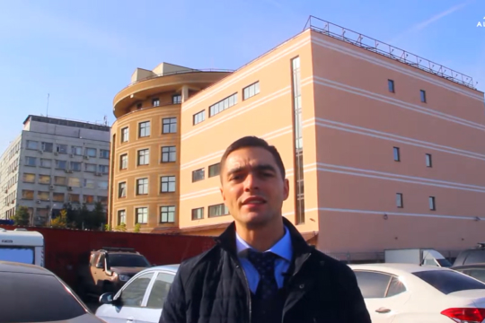

05 февраля 2023
Промышленный альпинизм, сокращенно «промальп» — это технология выполнения работ на высоте, там, где нет и не будет никакой опоры.
Промышленный альпинист использует обычное снаряжение для альпинизма: веревки и тросы, страховочную систему, спусковые устройства, карабины и прочие вещи, нужные для безопасной работы на высоте. Список снаряжения и инструментов стандартный, а вот приемы их использования могут отличаться в зависимости от того, где человек работает и что ему приходится делать.
В любом городе обычно есть работа, которую может выполнить только промышленный альпинист. Например, у высотных зданий бывают площади с отрицательным нависанием и сложные по рельефу, просто труднодоступные места на большой высоте. Там, где нельзя спустить человека в «люльке» или на «лесах», приглашают промальпа. Можно, конечно, использовать специальную технику, которая поднимет человека на высоту, но обычно это стоит дороже, чем нанять бригаду альпинистов.
Работа всегда связана с риском падения или травмы, поэтому допускаются к ней только подготовленные люди.
Какие работы выполняет промальп
- Мойка окон и стен: бывают отдельные заказы на мойку стен высотного дома. Иногда требуется помыть витражи на бизнес-центрах и офисных зданиях, торговых галереях. Вертикальное остекление на торцах промышленных зданий или в районе лестничных пролетов жилых домов тоже нужно иногда очищать.
- Монтаж и демонтаж рекламы: баннеры, билборды, световые короба или буквы. Если площадь рекламы большая, то промальпам приходится по частям монтировать ее на стене и отмывать, если замарали во время установки. И все это в подвешенном на веревке состоянии, не имея опоры.
- Работа с освещением: нужно устанавливать светильники, менять перегоревшие лампы, развешивать световые гирлянды, декоративные и праздничные элементы.
- Сварка и сборка конструкций. Сварка на высоте — самый сложный вид работы для промальпа. Это необходимо, когда надо собрать или укрепить рекламную конструкцию, закрепить пожарные лестницы или приварить на место мелкие детали.
- Осмотр всего, что перечислено выше: в каком состоянии, долго ли простоит, что делать, чтобы стало лучше.
Иногда встречаются нестандартные заказы, например раскрасить фасад здания или поздравить человека через окно, но это редкость.
Риски и правила безопасности
Качество в работе — это условие по умолчанию, а у промальпа самое главное — безопасность. Она касается всего: снаряжения, обследования места работы, выхода на крышу, организации страховки, крепления инструмента, вывешивания за край, самой работы на спуске и сборке всего оборудования. Теперь по порядку.
Снаряжение должно быть крепким, целым и защищать вас от падения. Это значит, что в идеале перед каждой работой надо провести полную проверку:
- Проверить все швы и стропы на страховочной системе;
- Перебрать всю веревку, чтобы вовремя заметить места перетирания, порезов или поехавшей оплетки.
- Осмотреть на целостность деталей спусковые, страховочные устройства и карабины.
- Проверить, не стерлись ли там зубцы, которыми цепляется, например, жумар (зажим) за веревку.
Проверить доску, на которой будешь сидеть, — не дала ли трещину, не перетерла ли веревку.
Место работы перед началом тоже осматривают. Это нужно, чтобы узнать, как и где удобнее и безопаснее будет работать; где надо перекрыть доступ прохожим, чтобы на них случайно что-нибудь не упало сверху. Еще всегда смотрят, где люди ставят машины, чтобы вовремя предупредить их о начале работ и закрыть это место для парковки.
Риски и правила безопасности
Место работы перед началом тоже осматривают. Это нужно, чтобы узнать, как и где удобнее и безопаснее будет работать; где надо перекрыть доступ прохожим, чтобы на них случайно что-нибудь не упало сверху. Еще всегда смотрят, где люди ставят машины, чтобы вовремя предупредить их о начале работ и закрыть это место для парковки:
1) Риски и правила безопасности
Место работы перед началом тоже осматривают. Это нужно, чтобы узнать, как и где удобнее и безопаснее будет работать; где надо перекрыть доступ прохожим, чтобы на них случайно что-нибудь не упало сверху. Еще всегда смотрят, где люди ставят машины, чтобы вовремя предупредить их о начале работ и закрыть это место для парковки:
2) Риски и правила безопасности
Место работы перед началом тоже осматривают. Это нужно, чтобы узнать, как и где удобнее и безопаснее будет работать; где надо перекрыть доступ прохожим, чтобы на них случайно что-нибудь не упало сверху. Еще всегда смотрят, где люди ставят машины, чтобы вовремя предупредить их о начале работ и закрыть это место для парковки:
1) Риски и правила безопасности
Место работы перед началом тоже осматривают. Это нужно, чтобы узнать, как и где удобнее и безопаснее будет работать; где надо перекрыть доступ прохожим, чтобы на них случайно что-нибудь не упало сверху. Еще всегда смотрят, где люди ставят машины, чтобы вовремя предупредить их о начале работ и закрыть это место для парковки:
2) Риски и правила безопасности
Место работы перед началом тоже осматривают. Это нужно, чтобы узнать, как и где удобнее и безопаснее будет работать; где надо перекрыть доступ прохожим, чтобы на них случайно что-нибудь не упало сверху. Еще всегда смотрят, где люди ставят машины, чтобы вовремя предупредить их о начале работ и закрыть это место для парковки:
1) Риски и правила безопасности
Место работы перед началом тоже осматривают. Это нужно, чтобы узнать, как и где удобнее и безопаснее будет работать; где надо перекрыть доступ прохожим, чтобы на них случайно что-нибудь не упало сверху. Еще всегда смотрят, где люди ставят машины, чтобы вовремя предупредить их о начале работ и закрыть это место для парковки:
2) Риски и правила безопасности
Место работы перед началом тоже осматривают. Это нужно, чтобы узнать, как и где удобнее и безопаснее будет работать; где надо перекрыть доступ прохожим, чтобы на них случайно что-нибудь не упало сверху. Еще всегда смотрят, где люди ставят машины, чтобы вовремя предупредить их о начале работ и закрыть это место для парковки:
Промышленный альпинист использует обычное снаряжение для альпинизма: веревки и тросы, страховочную систему, спусковые устройства, карабины и прочие вещи, нужные для безопасной работы на высоте. Список снаряжения и инструментов стандартный, а вот приемы их использования могут отличаться в зависимости от того, где человек работает и что ему приходится делать. В любом городе обычно есть работа, которую может выполнить только промышленный альпинист.